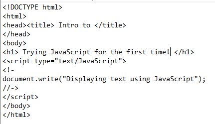
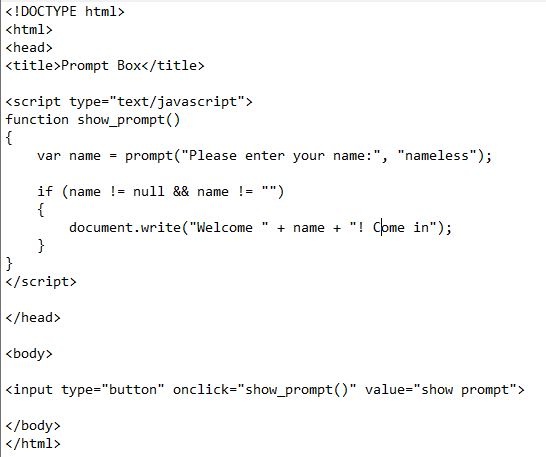
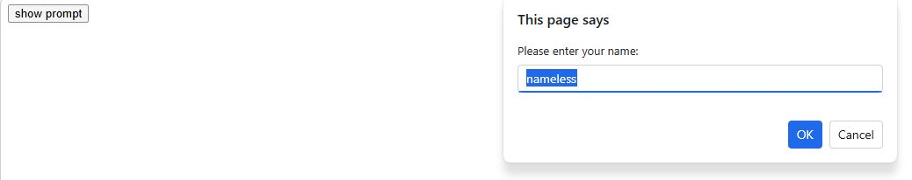
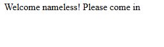
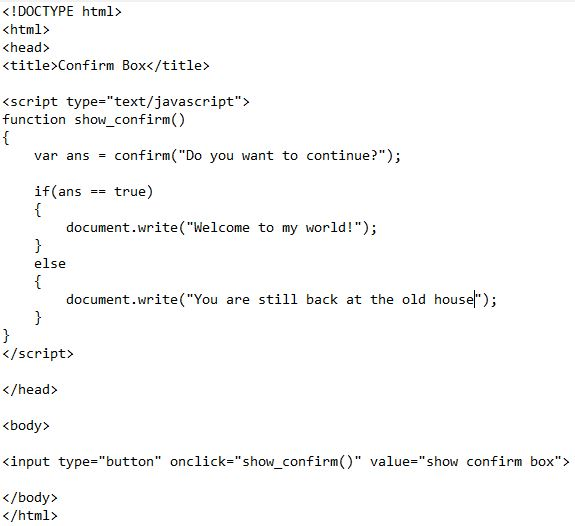
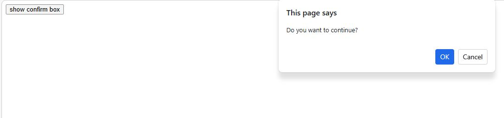
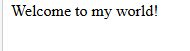

During our first ICT class in 4th quarter, we were introduced about a new scripting language which is JavaScript wherein it mainly creates interaction with the clients.
This lesson taught me where JavaScript can be placed in an HTML file such as the head, body, or external files. I also learned important JavaScript guidelines like case sensitivity, proper spacing, and writing clean code to avoid errors.
In this lesson, I understood the basic characteristics of JavaScript and how it works with objects, methods, properties, and events to make webpages interactive. I also learned about variables and different data types used in JavaScript.



In lesson 4, I learned about the different types of popup boxes in JavaScript and one is User-Input prompt box where we can see that when the button is clicked, a prompt box will be shown asking for the user input. The user input will be saved on the variable name. The user input will then be validated.



This type of pop up box is called the 'Confirm Box'. Personally, this one's my favorite among the different types of popup boxes. Because when the button is clicked, a confirmation box will be shown asking for confirmation if it will proceed. The choice will be saved on the variable ans. The choice will then be used to activate the proper block of code.